다리를 감싸는 의복을 말하고 ‘식(飾)’은 머리에 쓰는 모자나 관, 발에 신는 신이나
허리에 두르는 띠 등 여러 가지 장식을 의미한다.
일상복
곤룡포는 조선시대 왕의 일상복이자 공식 복장으로,왕의 권위와
신분을 상징합니다. 가슴과 등에 수놓아진 용 문양은 왕의
권위와
힘을 상징하고, 소매와 옷자락의 구름과 파도 문양은 천하를
다스
리는 왕의 능력을 나타냅니다.
-
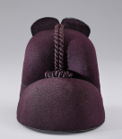익선관
-
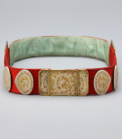옥대
-
목화
왕비 당의는 조선시대 궁중 의복 중 가장 화려하고 정교한
복장입
니다. 국혼, 종묘제례, 왕세자 탄생 등 중요한 행사에서
착용되며,
왕비의 지위와 권위를 상징합니다. 당의와 치마에는 꽃, 나비,
봉
황 등 왕비의 품격을 나타내는 정교한 문양이 새겨져 화려하게
장
식되었습니다.
-
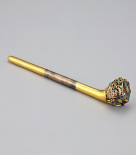비녀
-
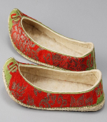혜
-
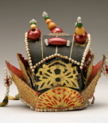회관
조상제례
종묘 제례와 같은 중요한 제사 의식에서 착용하는 의복으로, 왕
의 위엄과 권위를 나타내며, 국가의 중요한 제사 의식에서 매우
중요한 역할을 합니다. 제복은 왕의 지위를 상징하는 동시에,
의
식의 격식을 높이는 중요한 의복입니다.
-
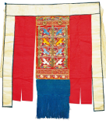후수
-
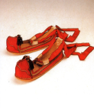적석
-
규
조상을 기리는 제례 행사 나 왕실 내 다른 인물의 혼례식 등
궁중
에서 열리는 연회나 특별한 의식에 참여할 때 착용했으며
왕실의
여성이 참여하는 제례에서는 원삼과 같은 격식 있는 의복을
착용
하여 경건함을 표현하고 왕비의 지위와 권위를 상징합니다.
-
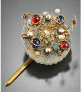떨잠
-
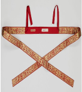붕대
-
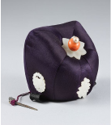족두리
혼례식
왕의 대례복은 조선 왕조의 통치 이념과 왕권을 시각적으로 드
러내는 중요한 상징입니다. 주로 즉위식, 제사, 외국 사신 접견
등 국가적인 중요한 행사나 의례에서 착용했습니다. 대례복은
왕의 역할과 책임을 강조하며, 조선시대의 정치적, 사회적 질서
를 유지하는 데 중요한 역할을 했습니다.
-
면관
-
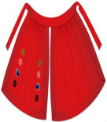면복
-
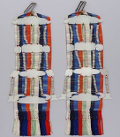패옥
왕비의 대례복도 조선 왕조의 통치 이념과 왕비의 권위를
시각적
으로 드러내는 중요한 상징을 하며 중요한 국가 행사나 국혼(국
가적인 혼례), 종묘제례, 왕세자 탄생 등에서 착용 했으며
왕비의
지위와 권위를 상징하며, 공식적인 자리에서 왕비의 품격을
나타
냅니다
-
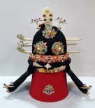대수머리
-
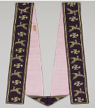하피
-
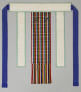후수